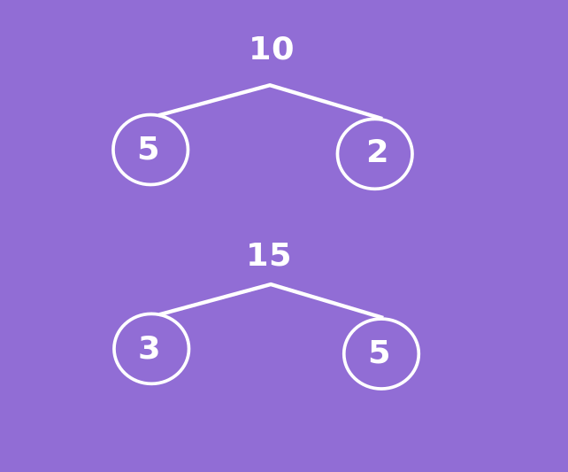

Untuk memahami bagaimana cara menentukan KPK. Coba kalian pahami tentang perkalian persekutuan dan faktor persekutuan
Isilah titik-titik di tabel kelipatan bilangan berikut. Kelipatan yang dimaksud adalah kelipatan bilangan bulat positif.
\[a\]
\[a \times 1\]
\[a \times 2\]
\[a \times 3\]
\[a \times 4\]
\[a \times 5\]
1
1
2
3
4
5
2
6
8
10
3
3
6
9
4
4
8
\[a\]
\[a \times 1\]
\[a \times 2\]
\[a \times 3\]
\[a \times 4\]
\[a \times 5\]
1
1
2
3
4
5
2
2
4
6
8
10
3
3
6
9
12
15
4
4
8
12
16
20
Dari tabel diatas daftar bilangan-bilangan yang sama antara kelipatan 1 dan 2 adalah 2 dan 4.
Bilangan 2 dan 4 disebut sebagai kelipatan persekutuan dari 1 dan 2. Sedangkan 2 disebut Kelipatan Persekutuan Terkecil (KPK) dari 1 dan 2.
Kesimpulan
KPK dua bilangan bulat positif atau lebih adalah bilangan terkecil yang habis dibagi bilangan tersebut
Mari kita lihat contoh soal untuk lebih memahami bagaimana cara menentukan KPK
Contoh:
tentukan KPK dari bilangan berikut.
6 dan 15
3, 6 dan 8
Jawab:
Daftar kelipatan 6 dan 15
Kelipatan 6 adalah 1 x 6 =6 2 x 6=12 3 x 6 = 18 4 x 6 = 24 5 x 6 = 30.
Kelipatan 15 adalah 1 x 5 = 15 2 x 5 = 30
Dari daftar tersebut KPK dari 6 dan 15 adalah 30
Daftar kelipatan 3,6 dan 8
Kelipatan 3 adalah 3, 6, 9, 12, 15 ,18 , 21, 24.
Kelipatan 6 adalah 6, 12, 18, 24.
Kelipatan 8 adalah 8, 16, 24
dari daftar tersebut KPK dari 3, 6 dan 8 adalah 24
selain menggunakan cara mendaftar seperti diatas kalian bisa menggunakan cara faktorisasi prima perhatikan animasi berikut ini.
Petunjuk
tekan tombol mulai pada animasi dibawah
jika animasi belum muncul harap tunggu sebentar
didalam animasi akan ada pertanyaan silahkan dijawab
Contoh Soal
1 dari 2
tentukan KPK dari 45, 75 dan 90
penyelesaian:
langkah 1:
menentukan faktorisasi prima dari 45, 75 dan 90
faktorisasi prima dari \[45 = 3 \times 3 \times 5 = 3^2 \times 5\]
faktorisasi prima dari \[75 = 3 \times 5 \times 5 = 3 \times 5^2\]
faktorisasi prima dari \[90 = 2 \times 3 \times 3 \times 5 = 2 \times 3^2 \times 5\]
langkah 2:
KPK ditentukan dengan mengalikan semua faktor prima dari setiap bilangan, jika ada faktor prima yang sama, dipilih yang pangkatnya tertinggi.
faktor prima dari 45, 75, dan 90 adalah 2, 3(terdiri atas 3 dan \[3^2\]) dan 5(terdiri atas 5 dan \[5^2\])
diantara 3 dan \[3^2\] yang memiliki pangkat tertinggi adalah \[3^2\]
diantara 5 dan \[5^2\] yang memiliki pangkat tertinggi adalah \[5^2\]
KPK = \[2 \times 3^2 \times 5^2 = 2 \times 9 \times 25 = 450\]
2 dari 2
bu idah dan bu mita mengikuti kursus membuat dodol kandangan. bu idah mengikuti kursus setiap 10 hari sekali, sedangkan bu mita mengikuti kursus 15 hari sekali. pada hari ini mereka mengikuti kursus membuat dodol bersamaan. berapa hari lagi mereka akan mengikuti kursus membuat dodol bersamaan?
penyelesaian:
cara 1:
kelipatan 10 = 10, 20, 30.
kelipatan 15 = 15, 30.
mereka akan mengikuti kursus dodol secara bersamaan setelah 30 hari lagi
cara 2:
menentukan faktorisasi prima dari 10 dan 30

faktorisasi prima dari \[10 = 2 \times 5\]
faktorisasi prima dari \[15 = 3 \times 5\]
KPK = \[2 \times 3 \times 5 = 30\]
mereka akan mengikuti kursus dodol secara bersamaan setelah 30 hari lagi
pertanyaan
Petunjuk pengerjaan
isikan lah titik-titik dibawah ini dengan bilangan bulat
jika jawaban kamu benar, maka akan muncul tulisan jawaban benar
jika jawaban kamu salah, maka akan muncul tulisan jawaban salah disertai pembahasan
1 dari 3
hasil KPK dari 50, 80 dan 120
=
Petunjuk pengerjaan
isikan lah titik-titik dibawah ini dengan bilangan bulat
jika jawaban kamu benar, maka akan muncul tulisan jawaban benar
jika jawaban kamu salah, maka akan muncul tulisan jawaban salah disertai pembahasan
2 dari 3
hasil KPK dari 200, 550, dan 650
=
Petunjuk pengerjaan
isikan lah titik-titik dibawah ini dengan bilangan bulat
jika jawaban kamu benar, maka akan muncul tulisan jawaban benar
jika jawaban kamu salah, maka akan muncul tulisan jawaban salah disertai pembahasan
3 dari 3
Pak amat memancing haruan di rawa 6 hari sekali. Pak garbus memancing haruan di rawa 10 hari sekali dan pak udin memancing haruan di rawa 15 hari sekali. Pada hari ini mereka memancing haruan di rawa bersama-sama. Setelah berapa harikah mereka dapat memancing bersama sama lagi?